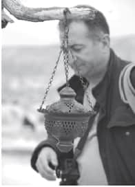

TEKİN ERTUĞ

İlk gençlik yıllarında amatör olarak uzun süre resim ve karikatür yaptı ve aynı zamanda edebiyat dünyasına yakın durdu.
Gençlik yıllarının olgun sayılabilecek 5-6 yıllık bir döneminde ise, yine amatör olarak halk müziği ve kültürü konusuna eğildi.
90’ lı yılların başlarında amatör olarak fotoğrafa başladı.
Resmi ve özel, çeşitli kurum ve kuruluşlarda temel eğitim seminerleri ve ileri düzey seminerler verdi, atölyeler gerçekleştirdi.
Basılı ve sanal ortamda, bazı felsefe, yazın ve fotoğraf dergilerinde yazıları yayınlandı.
2011 yılından itibaren Alter Yayıncılık bu yazıları;
“Fotoğraf Sanatı Üzerine”,
“Fotoğraf Sanatı Üzerine (Kritik Eşik)”,
“Fotoğraf Sanatı Üzerine (İzlenimler, Düşler, Düşünceler)”,
“Fotoğraf Sanatı Üzerine (Üst Eşik-1),
isimleriyle 4 ayrı cilt olarak yayınladı.
Bu seriyi tamamlamak ve başka konularda olmak üzere, daha önce herhangi bir yerde yayınlanmamış yazılarından oluşan yeni kitaplar üzerinde çalışmalarını sürdürmektedir.
Otuz yıldan fazla süren kamu görevine, çocukluğundan beri düşlediği sanat ve yazın alanını tam zamanlı yaşayabilmek üzere son verdi.
Fotoğraf Sanatı Kurumu çatısı altında yaklaşık bir buçuk yıldır süren ve üç yılda tamamlanacak olan uzun soluklu, “Kuram” ve “Kurgu” öncelikli bir atölye çalışması yürütmektedir.
Diğer atölye etkinliklerinin yanısıra, atölye çalışmaları bağlamında ve bu çalışmaların bir parçası olmak üzere, atölye üyeleriyle birlikte, fotoğraf ustalarıyla bir dizi söyleşi-röportaj yaparak; onların anılarını/yaşam öykülerini derleyip basılı hale getirmeye, diğer yandan onların fotoğrafa ve sanata yaklaşımlarını sonraki kuşaklara aktarmaya; özetle, yaşamın diğer alanlarında sık rastladığımız, ancak fotoğraf dünyamızda önemli ölçüde eksik kalan bir tür “Hatırat” yazımını gerçekleştirmeye çalıştı.